Care for Your Kidney Foundation (CFYKF) screens, educates and supports underserved communities across Hyderabad — bringing together nephrologists, hospitals, police departments and volunteers under one mission: cut India's kidney disease burden through early detection and awareness.
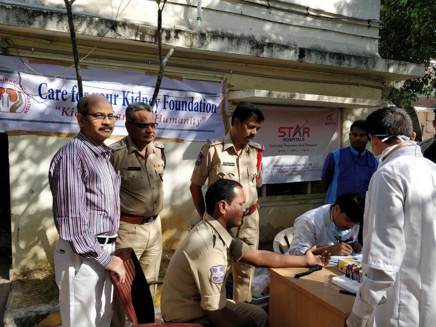
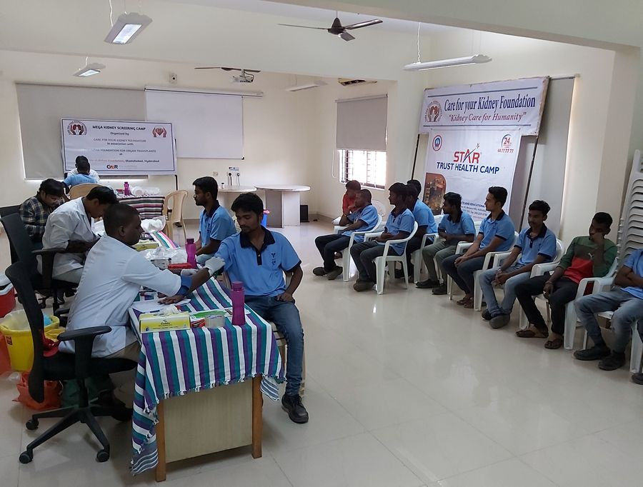
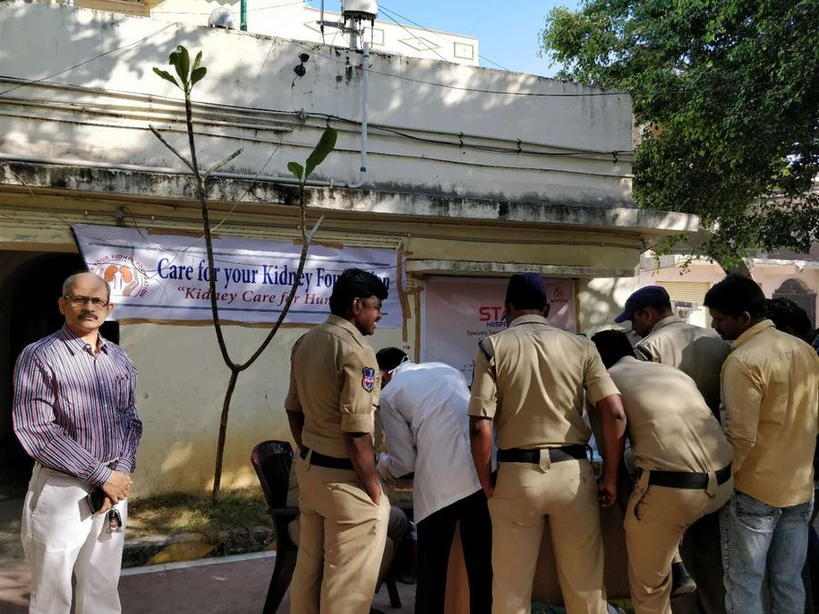
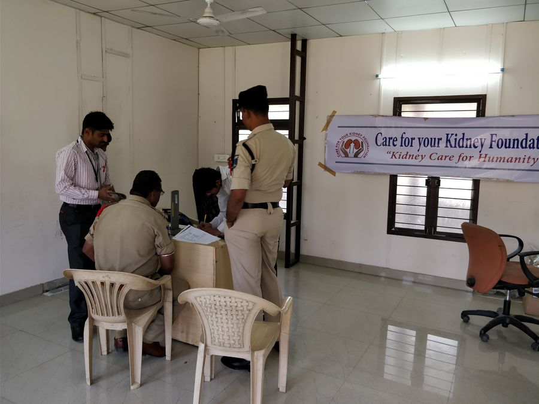
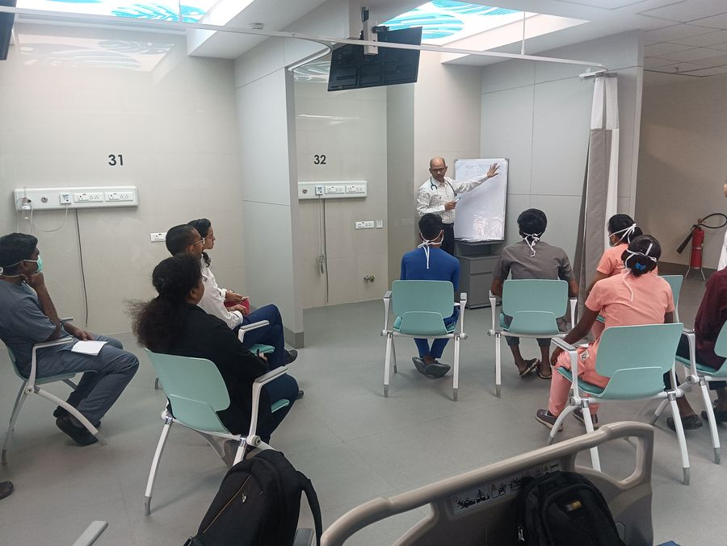
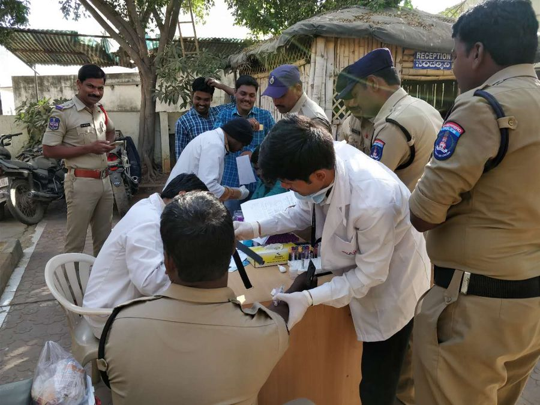
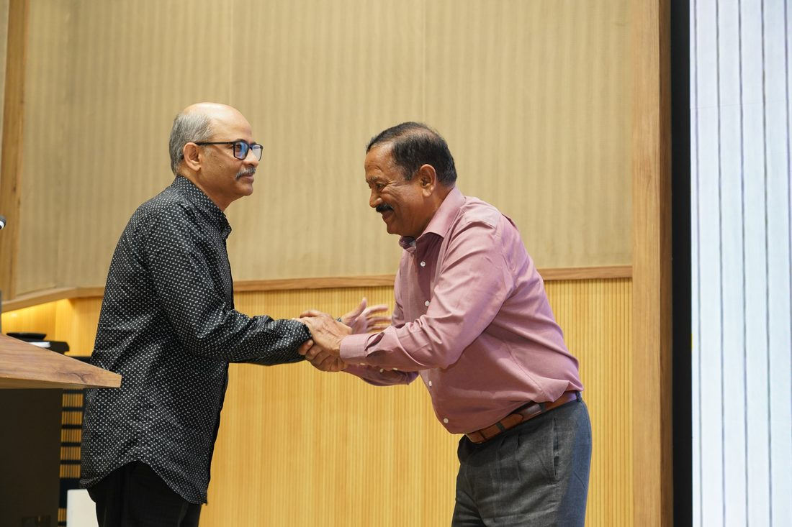


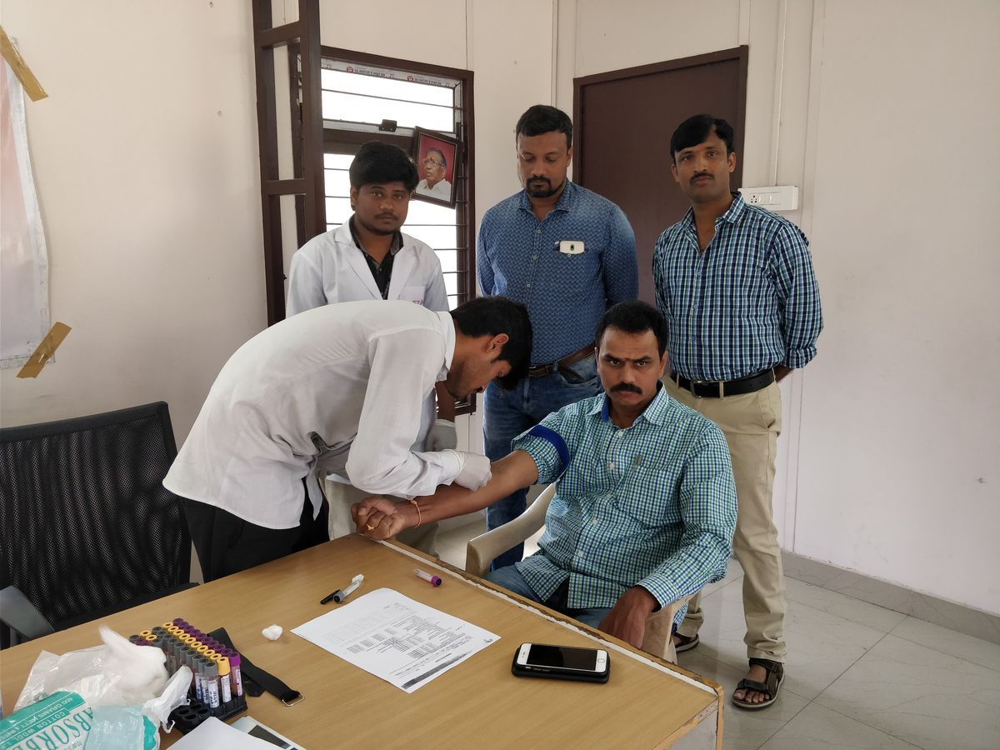
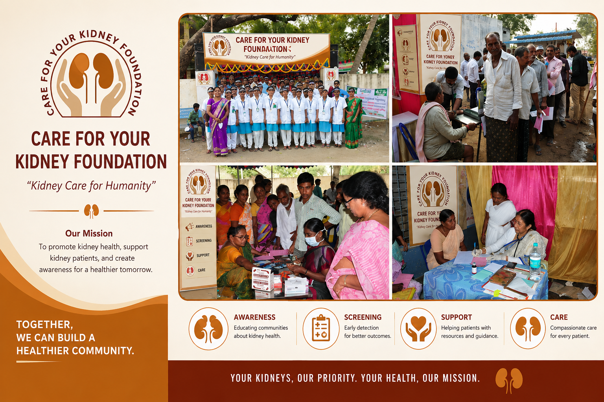
Screening camps to identify kidney disease early.
Awareness programs to empower communities.
Working with partners and volunteers for greater impact.
Timely care and guidance for healthier lives.
17% of India's 1.2 billion population shows some evidence of kidney disease in their lifetime. Over 3 million people are battling end-stage kidney failure right now, yet fewer than 5% have regular access to dialysis, and barely 5,000 transplants happen each year. Founded in 2015 by a team of nephrologists, urologists and social entrepreneurs, CFYKF exists to change that trajectory — through screening, prevention and partnership.
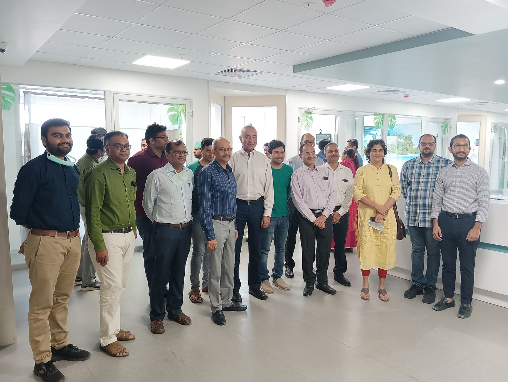
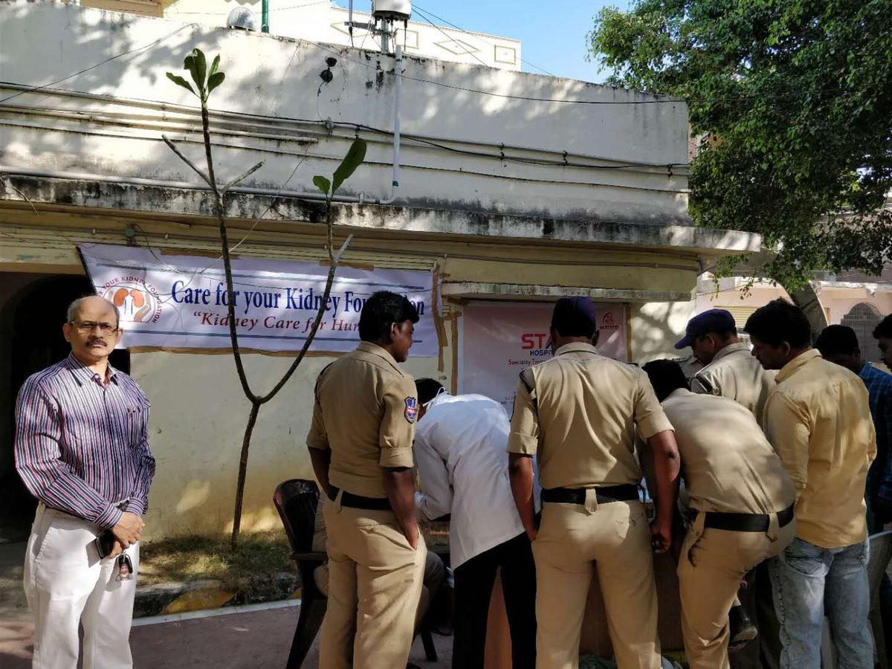
CFYKF doesn't stop at spreading awareness. We build the entire chain of prevention, early diagnosis, training and subsidized treatment.
Set up with Primary Health Centers, schools, religious institutions and NGOs to build local awareness of kidney disease and its prevention.
Where it startsEquipping every clinic to diagnose kidney disease early and delay its progression to severe stages.
Working with NRHM and city administration to roll out preventive programs in public hospitals.
Guiding patients toward transplantation where necessary and subsidizing the cost — including lifelong immunosuppressive medication.
For nurse practitioners and doctors serving as caregivers in our partner centers.
Publishing screening data — one of India's few community-level CKD prevalence datasets.
A glimpse into a decade of community screenings, training sessions and outreach across Hyderabad.
Area-wise data, photo galleries and impact numbers from every community camp we've run — in police stations, urban slums and dialysis units across Hyderabad.

"When our foundation did random tests in an area — on about 4,000 people — we found that the percentage of CKD-affected patients was more than 15%. This is appalling and unacceptable. Prevention is better than cure — it is our foundation's wish to educate everyone that kidney disease is preventable."
Whether you're a hospital, a government body, a volunteer or a well-wisher — there's a place for you in this alliance.
{kind=link}
{kind=link}
{kind=link}
{kind=link}
{kind=link}
{kind=link}
{kind=link}
{kind=link}
{kind=link}
{kind=link}
{kind=link}